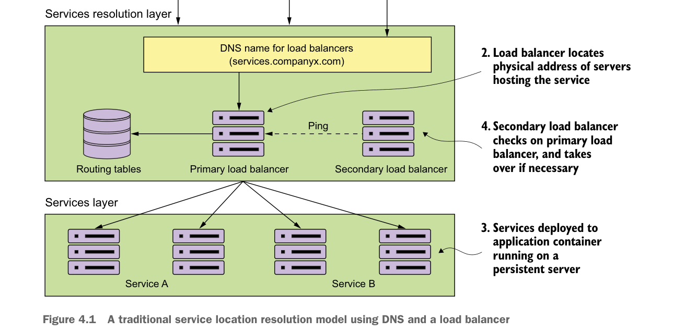

Về service discovery

Mô hình phân giải vị trí dịch vụ truyền thống dùng DNS và load balancer
Khi nhận yêu cầu từ service consumer, load balancer tìm mục địa chỉ vật lý trong bảng định tuyến dựa trên đường dẫn mà người dùng đang cố truy cập. Mục bảng định tuyến này chứa danh sách một hoặc nhiều máy chủ đang host dịch vụ. Load balancer sau đó chọn một trong các máy chủ trong danh sách và chuyển tiếp yêu cầu tới máy chủ đó.
Mỗi instance của một dịch vụ được triển khai lên một hoặc nhiều application server. Số lượng các application server này thường cố định (ví dụ, số application server đang host một dịch vụ không tăng giảm) và bền vững (ví dụ, nếu một máy chủ đang chạy application server bị sự cố, nó sẽ được khôi phục về cùng trạng thái như lúc xảy ra sự cố, và sẽ có cùng IP cũng như cấu hình như trước đó.)
Để đạt một dạng high availability, một load balancer phụ đang ở trạng thái rảnh rỗi và ping load balancer chính để kiểm tra xem nó còn hoạt động không. Nếu không còn hoạt động, load balancer phụ sẽ được kích hoạt, tiếp quản địa chỉ IP của load balancer chính và bắt đầu phục vụ các yêu cầu.
Mặc dù loại mô hình này hoạt động tốt với các ứng dụng chạy trong phạm vi trung tâm dữ liệu doanh nghiệp và với số lượng dịch vụ đang chạy tương đối nhỏ